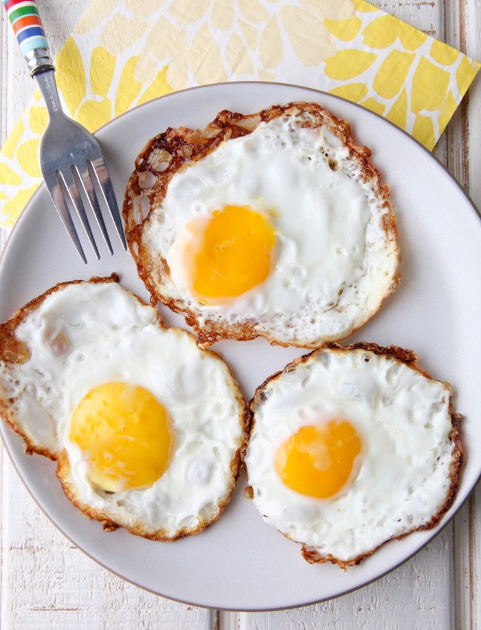

Fried Eggs

Fried Eggs Recipe
The recipe to making fried eggs is very simple, but also very delicious.
Ingredients
Steps
- Heat up the pan and add in the butter
- When the butter is fully melted, and the pan is hot, crack open the eggs into the pan.
- Let the eggs cook until the outside is mostly white
- turn off the heat and flip the eggs over
- Only let the eggs cook for a few seconds (Around 10 seconds each egg)
- Serve the eggs onto a plate, and add salt to taste
- Done!